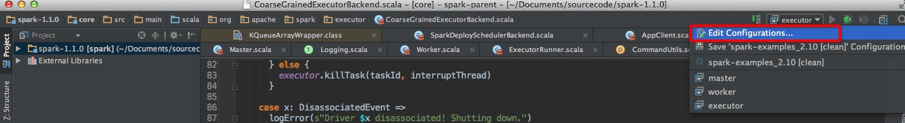
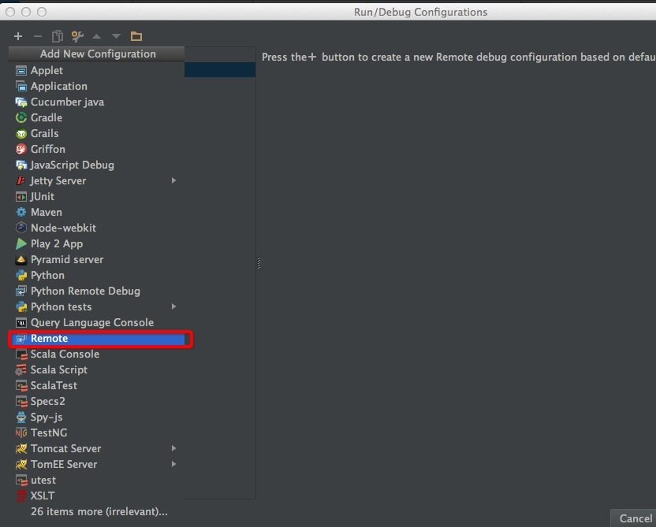
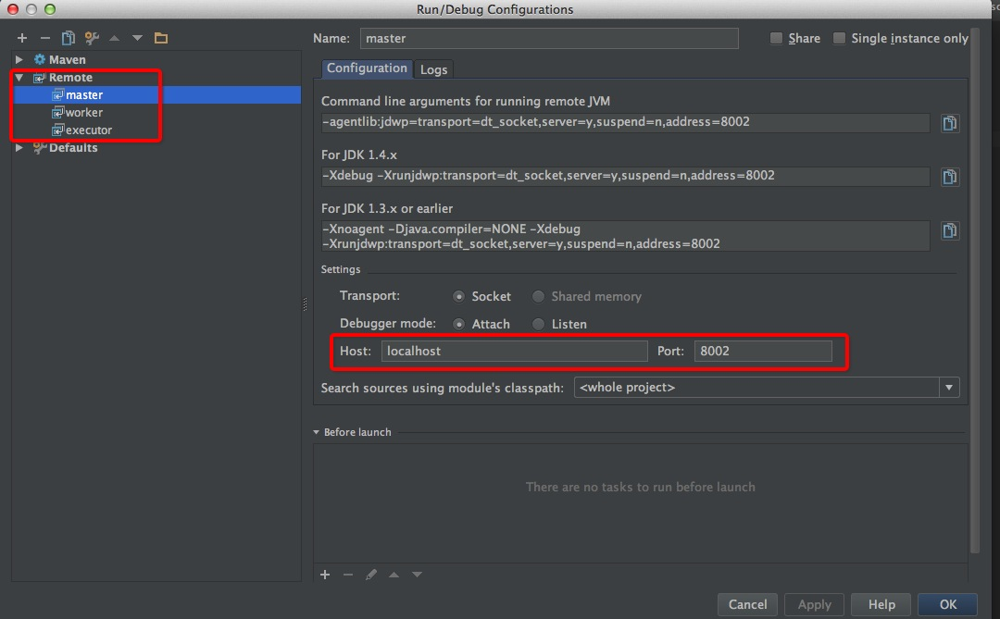
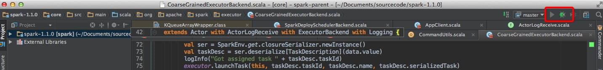

idea上debug spark standalone
引言
debug spark可谓是研究spark源码的利器。spark local模式和其他分布式模式有很大不同，虽然可以在local模式下进行debug，但有很多东西只有在分布式模式下才有用。本文主要介绍在idea上如何remote debug spark的standalone模式的四大部分：Master、Worker、Driver、Executor(yarn模式比较复杂，还需要结合yarn的debug模式才能搞定，但研究standalone已经可以搞清楚spark的大部分原理了)。
主要思想
1、spark-class: 像Master、Worker、Driver都是通过spark-class脚本进行启动各自的jvm(Driver其实是间接由spark-class启动，提交程序时以spark-class启动SparkSubmit,然后SparkSubmit以反射的形式调用Driver的main方法从而实现driver的运行)。
spark-class中设置了各jvm的参数，所以可以在这些参数中加入debug的相关参数。
2、Executor即CoarseGrainedExecutorBackend的参数在spark-class脚本中修改没用，因为其不是通过spark-class启动的，其是被ExecutorRunner启动，在buildCommandSeq->buildJavaOpts对相应参数进行设置，比如固定MaxPermSize=128m等。可以在SparkConf中设置spark.executor.extraJavaOptions参数。
##具体操作
spark-class的修改
修改spark/bin/spark-class文件：
都是在OUR_JAVA_OPTS中加入了1
-Xdebug -Xrunjdwp:transport=dt_socket,address=8002,server=y,suspend=n
具体见:1
2
3
4
5
6
7
8
9
10
11'org.apache.spark.deploy.master.Master')
OUR_JAVA_OPTS="$SPARK_DAEMON_JAVA_OPTS $SPARK_MASTER_OPTS -Xdebug -Xrunjdwp:transport=dt_socket,address=8002,server=y,suspend=n"
OUR_JAVA_MEM=${SPARK_DAEMON_MEMORY:-$DEFAULT_MEM}
;;
'org.apache.spark.deploy.worker.Worker')
OUR_JAVA_OPTS="$SPARK_DAEMON_JAVA_OPTS $SPARK_WORKER_OPTS -Xdebug -Xrunjdwp:transport=dt_socket,address=8003,server=y,suspend=n"
OUR_JAVA_MEM=${SPARK_DAEMON_MEMORY:-$DEFAULT_MEM}
'org.apache.spark.deploy.SparkSubmit')
OUR_JAVA_OPTS="$SPARK_JAVA_OPTS $SPARK_SUBMIT_OPTS -Xdebug -Xrunjdwp:transport=dt_socket,address=8004,server=y,suspend=n"
OUR_JAVA_MEM=${SPARK_DRIVER_MEMORY:-$DEFAULT_MEM}
这样也可以对HistoryServer等进行这样的debug。
Executor debug配置
直接在sparkConf中进行设置：1
sparkConf.setAppName("sparktest").set("spark.executor.extraJavaOptions", "-Xdebug -Xrunjdwp:transport=dt_socket,address=8005,server=y,suspend=n")
启动standalone
本机既作为master又作为worker，这样所有操作其实都是在本机上操作的，(当然有耐心的话，可以搞搞多台机器上的)。
1、启动master:在spark/sbin下启动1
$SPARK_HOME/sbin/start-master.sh
2、启动worker:1
$SPARK_HOME/bin/spark-class org.apache.spark.deploy.worker.Worker spark://localhost:7077
查看Master和Worker进程，可以看到remote debug已经打开1
/System/Library/Frameworks/JavaVM.framework/Versions/CurrentJDK/Home/bin/java -cp ::/Users/wangzejie/software/spark/spark-1.1.0-bin-hadoop2.3/conf:/Users/wangzejie/software/spark/spark-1.1.0-bin-hadoop2.3/lib/spark-assembly-1.1.0-hadoop2.3.0.jar:/Users/wangzejie/software/spark/spark-1.1.0-bin-hadoop2.3/lib/datanucleus-api-jdo-3.2.1.jar:/Users/wangzejie/software/spark/spark-1.1.0-bin-hadoop2.3/lib/datanucleus-core-3.2.2.jar:/Users/wangzejie/software/spark/spark-1.1.0-bin-hadoop2.3/lib/datanucleus-rdbms-3.2.1.jar -XX:MaxPermSize=128m -Dspark.akka.logLifecycleEvents=true -Xdebug -Xrunjdwp:transport=dt_socket,address=8003,server=y,suspend=n -Xms512m -Xmx512m org.apache.spark.deploy.worker.Worker spark://localhost:7077
idea上监听master和worker
spark 1.1源码已经导入idea工程中，在idea的Run/Debug config进行debug端口的设置。具体见下面的图。



Master、Worker、Driver、Executor都是这样的设置方法。
启动master、worker的remote debug:

选择相应debug,然后点debug按钮。
监听driver
1 | object Main { |
运行到driver的main方法时，我在代码中加入了sleep 10s，便于有足够时间启动driver的remote debug。
这样就可以debug我们的应用程序了。
监听Executor
当executor，具体是CoarseGrainedExecutorBackend被Worker启动时(可以看worker上控制台的日志中是否已经有启动CoarseGrainedExecutorBackend的语句，或在driver多设几个断点从而有足够时间来监听executor)。选择executor进行remote debug。
注意点
1、因为debug会使程序停顿比较久时间，所以有可能程序会出现超时、失去联结等错误。
2、在debug过程中，可以访问http://localhost:8080 来看运行页面
3、目前是在单机上模拟standalone，没有对hdfs等进行配置，所以都是通过sc.parallelize来进行数据获取。